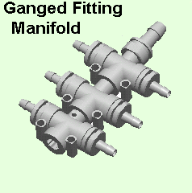
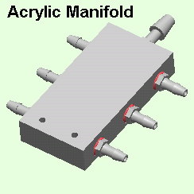
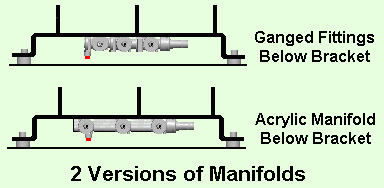

Replacing Vacuum Manifold
This procedure describes how to replace the vacuum manifold in the fluidics drawer.
Replace the vacuum manifold in the fluidics drawer when the vacuum manifold is leaking.


Versions of manifolds used in DxI instruments:
- Version 1 (obsolete) - Ganged fittings on a separate bracket above the pumps - replaced by version 2 per Vac. Dampener Mod.
- Version 2 - Ganged fittings on the vacuum pump mounting bracket bottom (early DxI 800 instruments).
- Version 3 - Acrylic block on the vacuum pump mounting bracket bottom (newer DxI 800 instruments and all DxI 600 instruments).

Interchangeability:
- The acrylic block version is interchangeable with the other versions. Always install the acrylic block version as a replacement for any version.